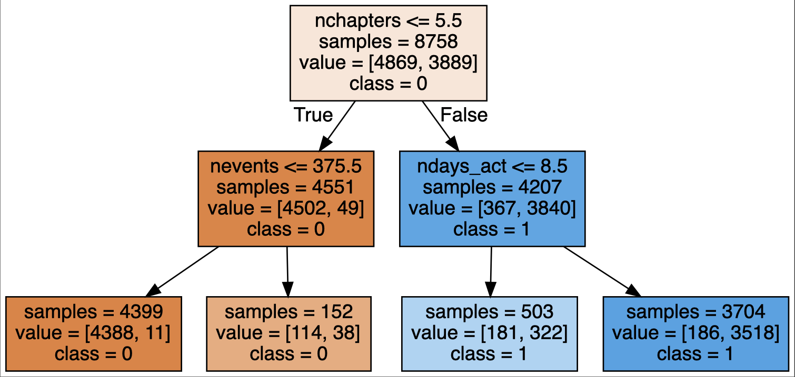
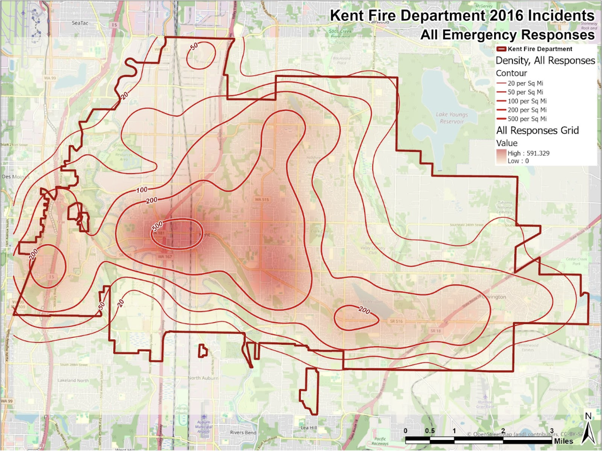
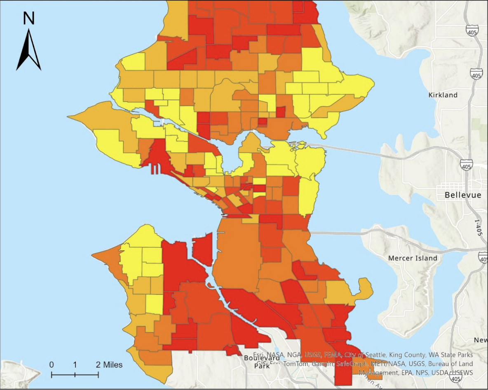

Welcome to My Portfolio
My name is Zach, and I'm a Geographic Data Science senior at the University of Washington.
Over the course of my time at UW I have become deeply interested in how I can apply my data visualization and statistical modeling skills for social policy and consulting. I am particularly interested in using urban spatial analysis for equitable land use planning.
Explore my projects in Machine Learning, Data Visualization, and GIS.
.
.
...this website is a work in progress, so you'll notice the GIS page is not accessible right now.



